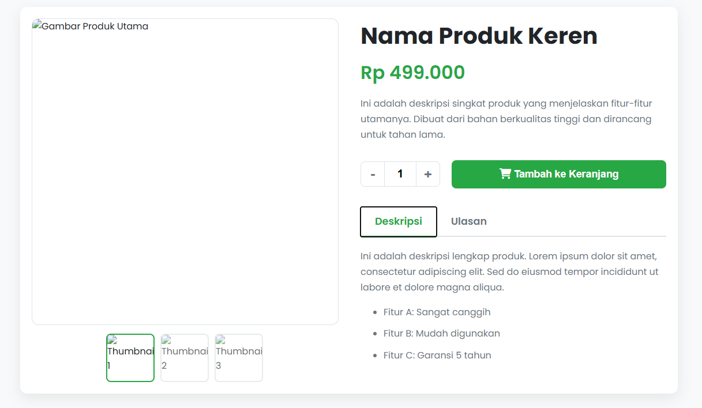

Halaman Produk E-commerce
Tentang Template Ini
Ini adalah template komponen "standar profesional" yang meniru halaman detail produk pada situs e-commerce modern. Halaman ini sangat penting untuk toko online mana pun.
Template ini adalah latihan UI/UX yang hebat, karena menggabungkan beberapa komponen interaktif menjadi satu halaman yang kohesif. Fungsionalitas galeri, selektor kuantitas, dan tab dikendalikan oleh Vanilla JavaScript.
Fitur Utama:
- Layout 2 Kolom (Grid) yang Bersih dan Responsif
- Galeri Gambar Produk: Gambar utama interaktif dengan thumbnail.
- Selektor Kuantitas: Tombol +/- untuk mengubah jumlah barang.
- Konten Tab: Tab interaktif untuk "Deskripsi" dan "Ulasan".
- Tombol "Tambah ke Keranjang" yang menonjol.
- Struktur HTML semantik untuk SEO e-commerce.
Teknologi yang Digunakan:
- HTML5
- CSS3 (Grid, Flexbox)
- Vanilla JavaScript (untuk semua interaktivitas)